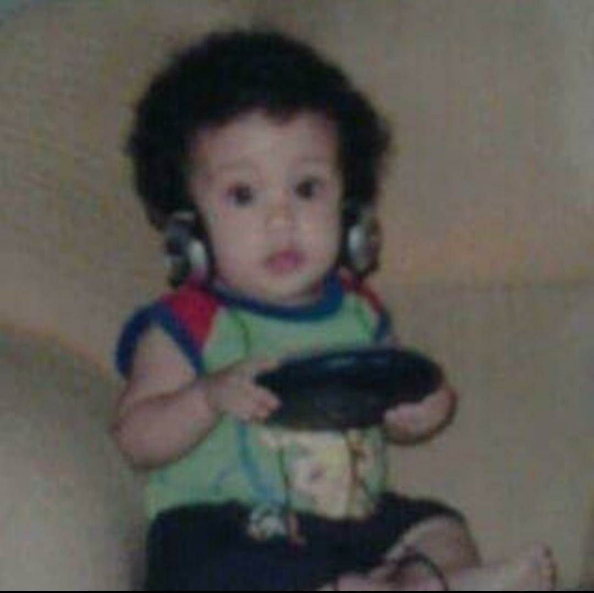
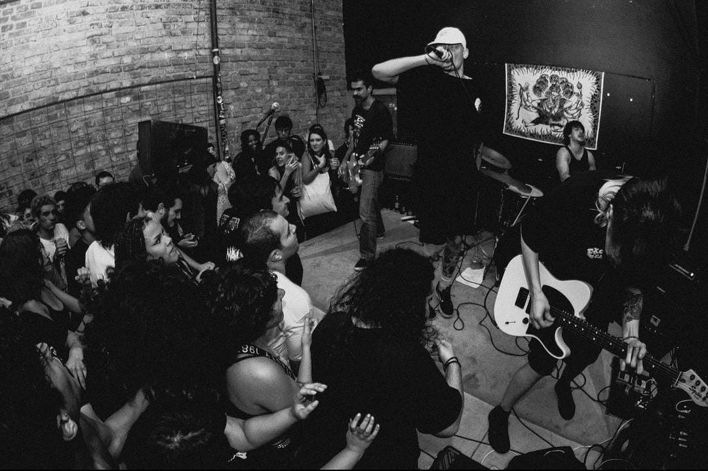

Desde criança eu tenho uma conexão e um apreço muito grande pela música.
Aos oito anos comecei a ouvir metal, principalmente NU metal e logo comecei a ouvir coisas
mais pesadas, como Cannibal Corpse, que eu ouço até hoje.
Mas sempre faltou algo, eu não me sentia incluído dentro da cena, e por serem músicas antigas, eu não conseguia me identificar por completo

Então, em 2020, eu conheci o Hardcore.
Pelo falo das bandas serem marjoritariamente formadas por pessoas da minha idade, eu consigo me identificar mais com os músicos.
As mensagens das letras, a energia da música me encanta.
Gosto muito de ir em shows, ouvir as músicas e conversar com os músicos.